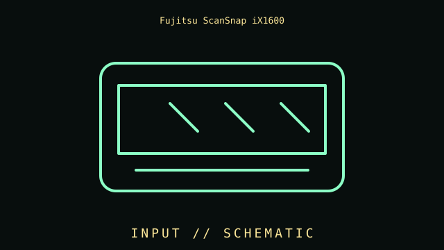

[ INDIVIDUAL COMPONENT // INPUT DEVICES ]
Fujitsu ScanSnap iX1600
Touchscreen duplex document scanner with 50-sheet ADF, USB 3.2 Gen 1, and dual-band Wi-Fi. This entry identifies this product generation and distinguishes important interface and revision differences.

MODEL IDENTIFICATION: Check the label for the complete model, revision, regional SKU, accessories, and current manufacturer documentation before installation.
Specifications
| Catalog subcategory | Imaging and audio-capture peripherals |
|---|---|
| Catalog identity | Fujitsu ScanSnap iX1600 |
| Era / family | Color duplex sheet-fed document scanner |
| Product-specific features | Duplex ADF rated up to 40 ppm / 80 ipm at 300 dpi under stated conditions; 50-sheet feeder; 4.3-inch touchscreen; long-document limits depend on mode. |
| Interface | USB 3.2 Gen 1 wired host interface or 2.4/5 GHz Wi-Fi; touchscreen supports scan profiles. Network setup and discovery require software. |
| Compatibility guidance | Use ScanSnap Home and model-specific supported OS package; mobile workflows require ScanSnap software and network setup. Do not assume TWAIN/generic operation; check region-specific support. |
| Variants and service note | iX1600 touchscreen/Wi-Fi differ from iX1400. Rated speed and feeder capacity depend on paper and settings; inspect rollers and feed pads. |
Installation & compatibility checks
- Record the exact model/revision, interface mode, receiver or cable identity, firmware, driver version, and supported host before testing.
- Check connector, power, protocol, OS/driver, and application support separately; physical connector fit alone does not establish feature compatibility.
- For wireless models, preserve original receivers and pairing data. Test wired and radio modes independently where both are provided.
- Do not infer performance from manufacturer maximums alone; note settings, application, host, and measurement method for measured results.
Model notes
iX1600 touchscreen/Wi-Fi differ from iX1400. Rated speed and feeder capacity depend on paper and settings; inspect rollers and feed pads.
Use ScanSnap Home and model-specific supported OS package; mobile workflows require ScanSnap software and network setup. Do not assume TWAIN/generic operation; check region-specific support.
Sources & further reading
- Manufacturer — Fujitsu ScanSnap iX1600 product specificationsProduct reference; confirm exact variant and regional SKU.
- Manufacturer — Fujitsu ScanSnap iX1600 support and manualsSupport reference for drivers, manuals, and revision-specific guidance.
Manufacturer model references are authoritative for exact revisions and regional variants. Specifications can differ by package, firmware, region, and driver generation.